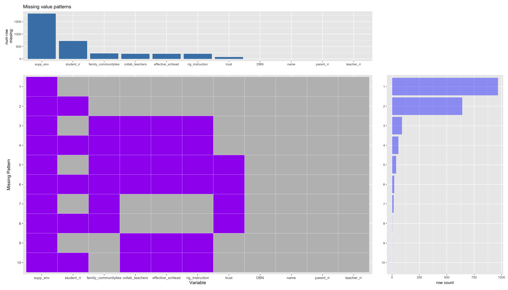
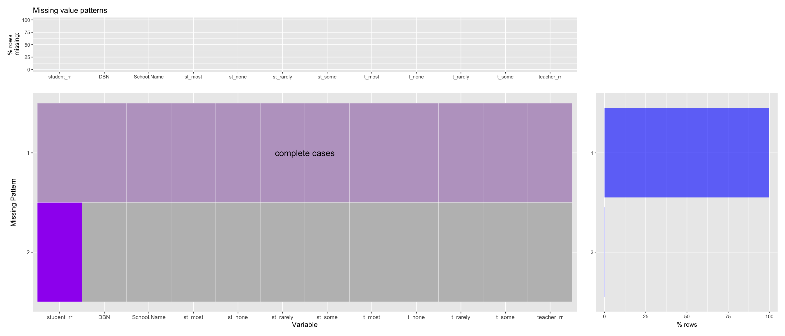
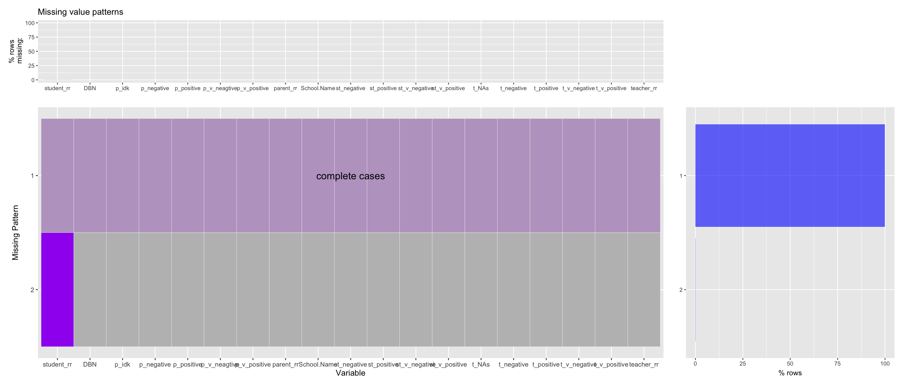

Chapter 4 Missing values
4.1 Aggregated Dataframe

7 variables out of 11 contains missing value. In most cases, the dataset is only missing the variable
Supportive Environment Score. The variable is also the one with most missing values: in fact, with 1829 missing observations, this variable is completely missing, which indicates this score might not be measured during the year of 2019. Therefore, there is no complete cases in this dataset as we know that one variable is completely void. However, more than 1/2 of the data only have theSupportive Environment Scoremissing.
Besides
Supportive Environment Score,Total Student Response Ratehas the second most NAs, with 720 observations. As we can observe from this graph, missingSupportive Environment ScoreandTotal Student Response Rateare the two most common missing patterns of the dataset, around 80% to 90% of the data lies in this category.
Five other variables with missing values are:
Collaborative Teachers,Effective School Leadership,Family-Community Ties', 'Rigorous Instructions, andTrust. BesidesTrust, the number of missing values for the other four variables are roughly equal, with around 200 missing values, whileTrusthas only 72 missing values. It made sense that the amount of missing values in different aspects are similar as these variables are calculated based on survey reponses.
As we’ve discussed earlier, this dataset does not contains complete cases, which means for certain observations all variables do not contain NAs. However, we can see that the columns
DBN,School Name,Total Parent Response Rate, andTotal Teacher Reponse Rateare complete with no missing values.
4.2 Dataframe on inclusion and diversity & aggressive behaviors & teaching quality

As we can see, for these three dataframes, all variables are complete, except that there are small amount of data missing on
Student Response Rate. In all these dataframes, there are only one observation missing onStudent Response Rate. As there are a total of 1109 observations in each dataframe, it constitutes a very small percent of missing pattern.
4.3 Dataframe on trust, collaboration, and respect & student performance & family communication
As we can see, these three dataframes are complete